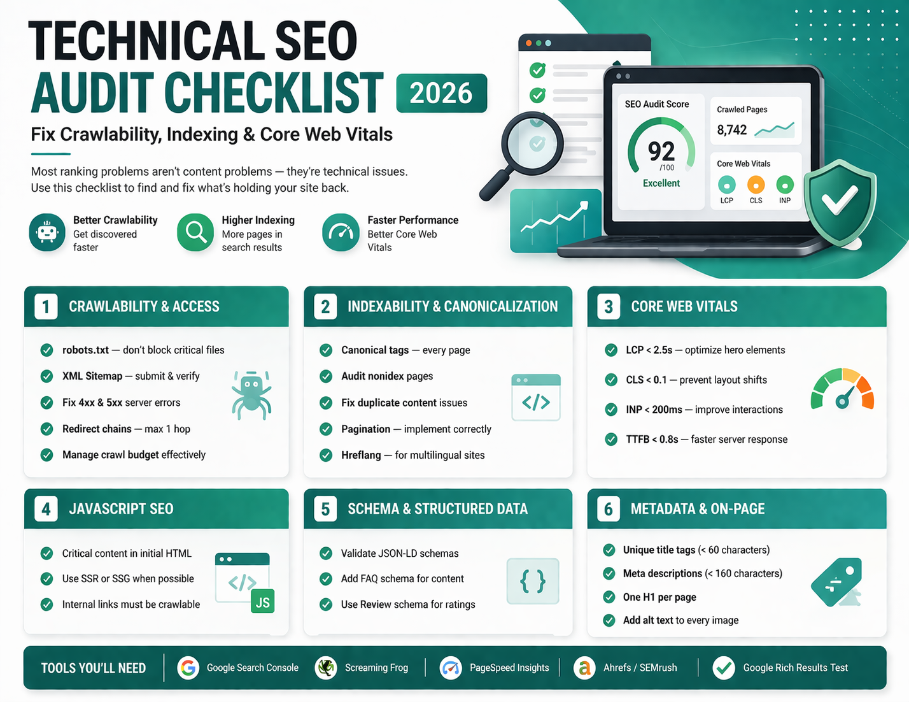

🔍 Need Professional Help?
Our Technical SEO Consulting Service includes comprehensive audits, crawlability fixes, and indexation improvements. Get a free audit →
After 15+ years of building and auditing websites, I can tell you that most ranking problems are not content problems — they're technical infrastructure problems that prevent Google from properly crawling, understanding, and indexing pages.
This checklist covers every technical SEO dimension I run through in a paid audit. Use it to systematically diagnose and fix what's holding your site back.
Tools you'll need: Google Search Console Screaming Frog PageSpeed Insights Ahrefs / SEMrush Google Rich Results Test
1. Crawlability & Access
robots.txt — block nothing critical
Check yourdomain.com/robots.txt. Common mistake: accidentally blocking CSS/JS files or entire sections. Use Google Search Console's robots.txt tester to validate.
XML Sitemap — submit and verify
Submit sitemap to Google Search Console. Ensure only indexable, canonical URLs appear. Remove paginated, filtered, and noindex URLs from the sitemap. Read our comprehensive sitemap strategy guide to optimize your crawl budget.
Server response codes — fix 4xx and 5xx errors
Use Screaming Frog or Search Console to find all 404 errors. Fix broken internal links. Redirect 301 any removed pages that had backlinks.
Redirect chains — max 1 hop
Chains of 3+ redirects waste crawl budget and pass less PageRank. Use Screaming Frog to find and collapse redirect chains into direct 301s.
Crawl budget — prioritize important pages
Sites with 10,000+ pages need crawl budget management. Use noindex,nofollow on thin/utility pages, and check the "Crawl Stats" report in Search Console.
2. Indexability & Canonicalization
Canonical tags — every page must have one
Self-referencing canonical tags on every page prevent unintentional duplicate content signals. Ensure canonicals point to the correct version (HTTPS, trailing slash consistent, no parameters).
Noindex pages — audit carefully
Use Screaming Frog to list all pages with noindex. Verify none of your important pages are accidentally noindexed. Also check: meta robots, X-Robots-Tag header, robots.txt.
Duplicate content — find and fix
Check for: www vs non-www, HTTP vs HTTPS, trailing slash vs no slash, URL parameter variations. All should 301 to the canonical version.
Pagination — implement correctly
Use proper rel="next"/rel="prev" or consolidate paginated content with infinite scroll crawlability fixes. Never noindex paginated pages if they contain unique content.
Hreflang — for multilingual sites
Validate hreflang annotations with Screaming Frog. Every language version must reference all others, including itself. Missing self-referencing hreflang is a common bug.
3. Core Web Vitals
LCP — Largest Contentful Paint under 2.5s
Identify the LCP element (usually hero image or H1). Preload it with <link rel="preload"> and fetchpriority="high". Serve images as WebP. Use CDN/edge caching.
CLS — Cumulative Layout Shift under 0.1
Add explicit width and height attributes to all images. Reserve space for ads and embeds. Use font-display: swap or next/font to prevent font-swap CLS.
INP — Interaction to Next Paint under 200ms
Break up long JavaScript tasks. Yield to the main thread with scheduler.yield(). Defer non-critical third-party scripts. Minimize event handler work.
TTFB — Time to First Byte under 0.8s
Enable server caching, use CDN edge caching (Cloudflare), optimize database queries, and consider static generation (SSG/ISR) for pages that don't need real-time data.
4. JavaScript SEO
Critical content — must be in initial HTML
Test with "View Page Source" (not DevTools). If important content (H1, body text, links) only appears after JavaScript runs, it's at risk of not being indexed. Use SSR or SSG instead. Learn more in our Next.js SEO architecture guide covering SSR, SSG, and ISR patterns.
Dynamic rendering — for heavy JS apps
If you can't move to SSR/SSG, use Cloudflare Workers or a prerendering service (Prerender.io) to serve static HTML to crawlers while keeping SPA for users.
Internal links — must work in HTML source
JavaScript-rendered internal links (spa navigation) are fine for users but use standard <a href=""> tags so crawlers can follow link equity through the site.
5. Schema & Structured Data
JSON-LD — validate all schemas
Test every schema type through the Google Rich Results Test. Fix all errors and warnings. Broken schema costs you rich snippet eligibility. Check out our schema engineering guide for detailed implementation strategies.
FAQ schema — for informational pages
Add FAQPage schema to service, about, and blog pages with common questions. This increases snippet size in SERPs and improves AEO (Answer Engine Optimization) visibility.
Review / AggregateRating — for service pages
Properly marked-up ratings can show star ratings in search results, significantly improving CTR. Ensure ratings are genuine and match on-page reviews.
6. Metadata & On-Page Signals
Title tags — unique and under 60 characters
Every page must have a unique, descriptive title tag. Avoid duplication — use Screaming Frog to export and audit all title tags at scale.
Meta descriptions — unique and under 160 characters
While not a ranking factor, meta descriptions influence click-through rates. Write compelling, descriptive summaries that include the primary keyword naturally.
H1 — one per page, matches intent
One H1 per page that clearly communicates the page topic. Must be present in the HTML source (not rendered by JavaScript only).
Image alt text — every image must have one
Alt text helps accessibility and image search. Describe the image naturally. Avoid keyword stuffing. Leave alt="" for decorative images.

Anju Batta
Senior Full Stack Developer, Technical SEO Engineer & AI Automation Architect with 15+ years of experience. I run full technical SEO audits and fix crawlability, indexability, and Core Web Vitals issues for clients worldwide.
Book a Technical SEO Audit →